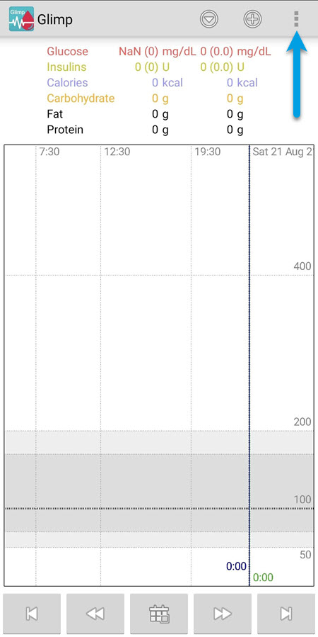
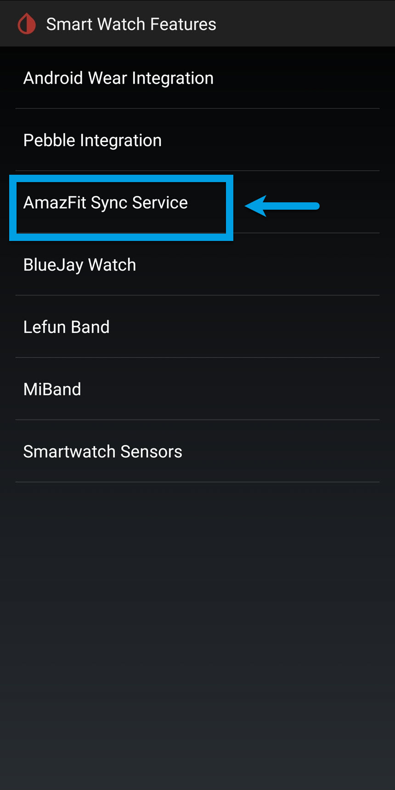
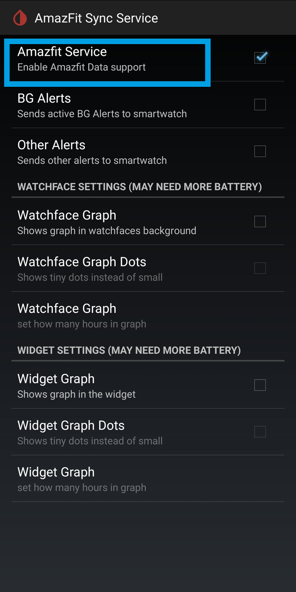

CGM onto - Watches

How to display CGM data on your watch.
Pebble Smartwatches

Pebble has been bought in 2016 by Fitbit and information resources have moved to
rebble.io.
Pebble support is still maintained in Loop, or AndroidAPS, and xDrip+
You still can find the Pebble app for iOS in the Apple Store
For Android you need to download it from APKMirror or APKPure.
For confirmation and getting the watchfaces, the original location closed so you'll need to register with Rebble.
For Nightscout watchfaces. Do a search for Nightscout, or CGM, and Configure the watchface with your Nightscout site URL.
Urchin
is a Pebble watchface to view data from a CGM monitor in graph format.
If you want to use your Pebble with Loop see Pebble Watchface, for AndroidAPS and FreeAPS.
Pebble xDrip+
To Enable Pebble Integration in xdrip Smartwatch features, go to
1. 2.
2.  3.
3. .jpg "Smart Watch Features")
4. 5.
5.
You can answer no to default watchface install if you like,so that you will be able to select another one.
You can also choose to install or not the snooze control. 
Android Wear OS smartwatches
With an Android smartphone.
Android Wear 2.x
Install Wear OS on your phone from Google Play store,and pair your watch to it.
Make sure to allow GPS and Wear OS access to position on the watch. Allow Wear OS to run in background on your phone.
If for any reason you need an older version you can go to APK Mirror
Note: Newer versions of Wear OS do not support this feature anymore, you have to sideload it and use Wear Installer after the 10th March 2021.See Video below!
Android Wear xDrip+
To enable Android Wear Integration to send xDrip+ BG to your smartwatch. Do not enable either Wear Collection service or Force Wear Collection.
1. 2. 3.
4. 5.
5.
For full xDrip+ wear documentation go here.
AndroidAPS which you will have to build yourself! See Instructions Here
For AAPS on Wear OS smartwatch here.
Glimp on Google Play
Select your Wearable device and enable the Glimp watchface.
1. 2.  3.
3. 
4. 5.
5.
Amazfit Pace & Stratos
xDrip+
1. Install the Amazfit watch app on your phone from Google Play.
2. Install the Amazfit tool and by un zipping file and double clicking on TOOL_ALL_IN_ONE.exe on a Windows PC update it as needed.
3. Download the widget from the project author (Klaus3d3) on GitHub repository.
4. unlock and enable USB debug on the watch, Do this by going to options then about and clicking on it 7 times.Video below is on a Ticwatch Pro 3 but I believe its done similar on the Amazfit Pace
5. Run TOOL ALL IN ONE and click the APK Installer button, select the widget apk file and INSTALL it.

6. Close the install window and click Reboot System.
7. In xDrip+, enable the Amazfit service and select other options you want to enable.
1. 2. 3.
4. 5.
Amazfit Band 5, Bip, Bip Lite, Bip S and GTR
Amazfit GTR2, GTR2e, GTS2, GTS2e and GTR42
Xiaomi MiBand 4 and 5
Follow Artem's instructions here. For the following watches above:
Sugarmate
Software designed to help you get the most out of your CGM. Can also setup as a calendar complication to display Nightscout on your Apple watch with Sugarmate.
nsapple
is an apple watch app for Nightscout / Loop followers.
Apple Watch Nightguard
Apple Watch series 3 and above. GitHub
Loop Follow
You can setup Loop Follow as a calendar complication to display Nightscout on your Apple watch.
Fitbit
Nightscout Monitor Ionic/Sense/Versa/Versa 2/Versa 3/Versa Lite Repository
Glance
Ionic/Sense/Versa/Versa 2/Versa 3/Versa Lite
Glance Web site
Samsung Gear Smartwatches
xDrip Glucose Quarantine Watchface for Samsung Tizen OS Smartwatches*¹ and Wear OS by Google (former Android Wear) Smartwatches
Instructions
Marclock
Ionic/Sense/Versa/Versa 2/Versa Lite
Instructions
Sentinel
Ionic/Sense/Versa/Versa 2/Versa Lite
Facebook group: Sentinel
G-Watch app
G-Watch Mobile App on the Playstore
Facebook group: G-Watch App
Garmin Smartwatches and Computers
By Phimby
By Horsetooth
By andreas-may
By Fredrik_S
By John_
Garmin Connecting Forerunner 945 to xdrip
I will be doing a video soon on a setup for this watch keep popping back!
 Why Not take visit UK Wide Cycle Ride - Diabetes.uk or Swim22 - Diabetes.uk for your Diabetes Needs!
Why Not take visit UK Wide Cycle Ride - Diabetes.uk or Swim22 - Diabetes.uk for your Diabetes Needs!
If you would like to donate to me for helping with these documents please visit where I try to attempt to do one of the challenge each year to raise funds for Diabetes UK I'm yet again doing one on the 1st September 2021 (Thank you for your kind donations!)